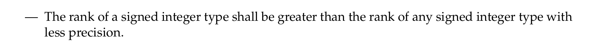

C23 标准手册拾遗
Comment进行一个通读
要点：
注意到 空指针 deref 是 undefined behavior。曾经在 gcc 中遇到过因为分析出空指针导致整个函数体被优化的情况。我现在 -O0 用多了已经忘了这些东西了。
shall be a null pointer。如果不是，那就是有问题的…
注意到 char **argv 是被允许的写法
所以，这些参数都不是 constant。似乎不应该写：
1 | int main(int argc, const char *argv[]); |
编译优化的基础：只要可观测行为以及跨单元函数调用的结果与抽象语义一致。当然也可以像 E1 一样，Serializable。
如果能推导出用 Float 和 Double 出来的结果一样，那么大可以用 Float，虽然这经典不可能；
浮点计算通常不能改变顺序。
有符号整数 int 的加法受到溢出的影响，也不能随意改变顺序。底层原因是：
有符号整数的加法溢出结果是未定义行为。
例子就是说，overflow 产生了一个 trap。我们必须设想这种行为在某些平台上是可能的。

。。。

注意到 一辈子没用过的浮点数定义 （float.h ），以及十进制浮点数类型 _Decimal32/64/128
居然真的准…而且可以显式转换
注意正常 gcc 是有针对十进制浮点数的格式化描述符扩展的。十进制浮点是 c23 吸收 gcc 的。然而你需要在configure gcc 的时候 --enable-decimal-float 才可以正常使用 printf。可以这样判断：
1 | gcc -v 2>&1 | grep "\-\-enable\-decimal\-float" |
没结果就烂了
Decimal floating types are a conditional feature that implementations need not support; see 6.10.9.3.
注意到 stdc 早就有 thread.h 了。
1 | extern int thrd_create (thrd_t *__thr, thrd_start_t __func, void *__arg); |
用了一辈子 pthread
注意到 C 语言有复数类型
1 |
|
1 | 7.000000+7.000000*i |
注意到 C 语言已经引入了 _BitInt 类型。我这里最大支持到 65535 位，似乎再也不用高精了。但是输入输出支持是个问题
但是，注意到 可以定义 printf specifier
1 | SYNOPSIS |
我的建议是，可以提前写好一套框架，并在要使用的时候填空。
注意到 printf 的 %n 格式化说明符：将当前 printf 的已输出字节数写入指针位置。
格式化字符串漏洞：如果一个程序允许用户输入格式化字符串，并且没有进行过滤，恶意用户可以利用
%n来进行任意地址写入。攻击者可以传递一个格式化字符串，例如"%100$n"，这会尝试将一个值写入堆栈上第 100 个参数的位置。如果这个位置正好是攻击者想要覆盖的内存地址，就可以用来修改程序行为或执行恶意代码。
注意到 现在有 nullptr_t type。需要 #include <stddef.h> 。用 clangd 分析器的时候一定要加上 -std=c23 才有
注意力涣散
$$
\text{Standard floating types} = { float, double, long\ double } \
\text{Decimal floating types} = { _Decimal32, _Decimal64, _Decimal128 }\
\text{Real floating types} = \text{Standard floating types} \cup \text{Decimal floating types}\
\text{Complex types} = {float\ _Complex, double\ _Complex, long\ double\ _Complex}\
\text{Floating types} = \text{Real floating types} \cup \text{Decimal floating types}\
$$
$$
\text{Corresponding real type}(float) = float\
\text{Corresponding real type}(_Decimal32) = _Decimal32\
\text{Corresponding real type}(float\ _Complex) = float\
…
$$
接下来介绍了这些类型的对齐之类的。
还有更多的变量分类学我懒得弄了，搞了一堆名词（
构造 derived（衍生？派生？）类型的方法有：数组、结构、联合、函数、指针、_Atomic (这个居然算衍生类型）
浮点类型（当然，包括实浮点和复浮点）和整数类型（单包括一个 char）构成算数类型（Arithmetic），这些再与单独的空指针类型 nullptr_t 和指针类型统称为标量类型。数组和结构联合都是聚合类型
。。为什么我要热衷于这种概念背诵的东西，是因为名词罗列整理起来很爽吗，感觉有点收集癖
注意到 分析器经常报的类型不完整（incomplete type）是有严格定义的。
注意到 这些是 qualifier。qualified type 和 unqualified type 有相同的表达和对齐但是是不同的类型。

但 _Atomic 不一样….
居然可以有不同的表达和类型。我感觉很难受。想想可能会添加一些保证原子操作需要的的 attr 之类吧。甚至附加一个锁在里面都有可能呢？
gemini老师说：
举个例子，假设你有一个64位的整型变量，但在一个32位的计算机上，读取这个变量需要两次内存操作：先读取低32位，再读取高32位。如果在两次操作之间，另一个线程修改了这个变量，那么当前线程就会读到一个被损坏的、不完整的值。
为了防止这种情况，编译器在处理
_Atomic变量时，可能会采取以下措施：
- 添加填充（Padding）：编译器可能会在变量周围添加额外的空间，以确保该变量在内存中是对齐的。这种对齐方式允许硬件在一个单一、不可中断的指令中完成对该变量的读或写。这会改变变量的大小和对齐方式。
- 改变表示方式（Representation）：为了使用特定的硬件原子指令（例如
compare-and-swap），编译器可能会为原子变量使用一种不同的内部表示形式。这种新的表示形式可能与原始的非原子类型不同。- 使用锁（Locks）：如果一个数据类型太大，硬件无法一次性进行原子操作，编译器可能会退而求其次，使用内部的锁机制。这虽然不会改变变量的大小，但它从根本上改变了变量的访问方式，这也是其“表示方式”的一部分。
关于 qualifier…
const 修饰的是它前面的类型。如果 const 在开头，才修饰后面的。
比如多个编译单元里，对同一个符号进行多次声明但类型不兼容。结果是未定义的。
神秘的合成大类型。while 我想说，其实编译器一般不会管两个编译单元对一个类型声明不一样，之类的事。大概是标准的特色吧
注意力涣散 整数类型居然有精度，但实际上就是位宽
类型提升规则大致就是 Decimal > Floating > Integer，不同宽的 integer 选更宽，同宽有 unsigned 选 unsigned
1 | _BitInt(2) a2 = 1; |
接下来讲了讲左值
注意到 结构体的成员可以是 const 的。感觉有点反人类。只能初始化